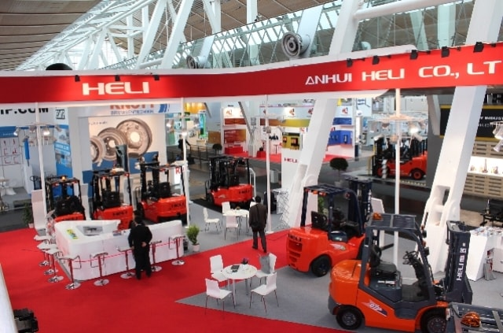

The renowned Hannover CeMAT was held at the Hanover Exhibition Center from the 19th to 23rd of May, 2014. As the largest and the most popular event in global logistics industry, this year’s CeMAT attracted 1,025 manufacturers worldwide to demonstrate their latest products and technologies, which aggregated the latest development technology and concepts of modern logistics industry. More than 53,000 experts from 65 countries visited the CeMAT, of which 70% was from Europe, 13% was from Asia, 9% was from America, 5% was from Africa, and 3% was from Australia.

As a representative enterprise of the Chinese forklift industry, HELI gathered the largest group for the CeMAT. Our exhibition stand occupied 450m2; a group of nearly forty people lead by the company leaders and comprised of overseas sales and product development personnel attended the CeMAT; and a whole new series of products marking the revolutionary breakthrough of HELI was on display.
The Hannover CeMAT is not just for the demonstration of products, but also the image and strength of companies and brands. Within the CeMAT, from the establishment of our stand to the publicizing of our factory and products, a great effort was put into demonstrating the strengths and features of HELI, which showed the profound background of HELI, and its professional, innovative and reliable brand image, demonstrating that HELI was not only an icon in the fast paced Chinese forklift industry, but also a internationalized
enterprise that is highly involved and actively participating in the competition of global forklift market.
In terms of products, this is the best reflection of HELI’s strengths, as more than ten new products were demonstrated in the CeMAT. Based on the experiences in Research & Development, manufacturing and sales and the accumulation of technology in the past few decades, along with the reference and adoption of requirements from market and clients, the release of HELI’s new products marked a new level for its product lines, consolidated the leading position of HELI products, and also accelerated its pace for advancing on the international market.
As a magnificent event held every three years, this CeMAT attracted more than 50,000 attendees, and the memorable stand of HELI was crowded as well. As the most famous Chinese forklift brand in the European market, HELI has gathered all their dealers from Europe and many new agents and customers to HELI’s stand for consultation. During the CeMAT, More than 30 regular customers and 110 new customers talked with us. On one hand, it enhanced the communication and collaboration with regular customers, improving the confidence of cooperation; on the other hand, new customer information was collected and organized to further enhance and improve the overseas sales network.
Within the CeMAT, the new brand CHL released by HELI was officially shown to the international market. Many new customers were contacted, and the company got great publicity.
Along with the shifting of the international economic situation and further developments of logistical industry, the competition pattern and structure of the forklift market is experiencing a vigorous change. We’ll take full advantage of this opportunity of launching new products, extend the effort put into Hannover CeMAT to seize the opportunities on the market, and take HELI’s overseas market development to a new level.
@Anhui Heli Co., Ltd. Baoji Heli Forklift Truck Plant all rights reserved.